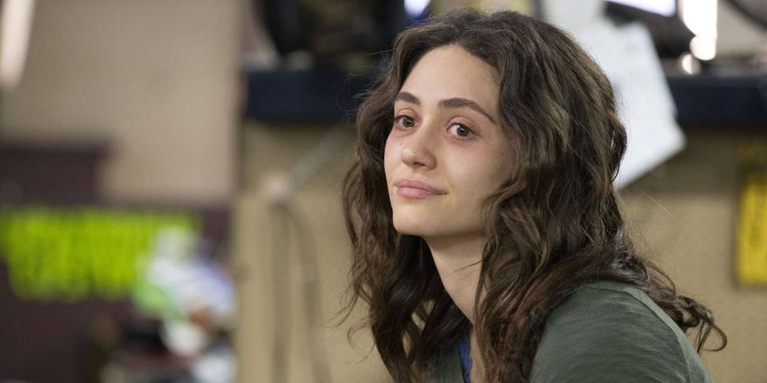

Fiona Gallagher: From Drama To Sitcom
Fiona’s character arc weakens over the course of the show, indicating a larger shift in writing style.
By: Aary Hash - 02/26/2025 | 3.5 Stars
Shameless was a widely beloved family drama satire that aired from 2011-2016. It surrounded the Gallaghers, a poor family living on the South Side of Chicago. The father, Frank, was an alcoholic and conman, and the mother, Monica, was absentee, so eldest daughter Fiona was tasked with raising herself and her five siblings for her entire life. This storyline differs in the original British show, but I wanted to discuss Fiona as a character in the US adaptation.
The show starts with Frank telling the viewers about his family, including stating his love for Fiona, because of how much of a “help” she is and because she has the “best qualities of her mother”. However, after that opening sequence, the show quickly shifts to revolving around Fiona, with Frank simply being one of the many obstacles in her path to keeping her afloat. With Frank’s opening sequence, we see his delusion in the way he views his family, not truly knowing anything about most of his kids. However, when Fiona becomes our narrator of sorts, we see the reality of her life. This is our first look into Fiona as a character: a girl who was forced to be an adult too fast, who has her head on straight but otherwise suffers from her loss of a childhood, and someone who is constantly worrying about her family.
While Fiona tries to be a guiding light for her siblings, she also quickly shows her need for adventure when she goes out with her friend to a club, gets into a fight with a bouncer, and ends up bringing home a man who supported her during the night’s antics and patched up his injuries. She thought he was a boring businessman and was disinterested in him until she found out he stole cars for a living. This personality trait of hers is what allows her arc throughout her nine seasons on the show to fully form. Over the course of the show, she continues trying to care for her family and get them through the difficult times, many of which are often caused by her father but some that stem from her own risky decisions. As the kids grow older, she begins to desire a life for herself outside of her family, and she moves out into an apartment building she invested in, and continues her push to a better life. However, one of the biggest changes for her as a character is how she begins to abandon her family and play less of a part in their lives. She ends her run on the show by deciding to truly start a new life away from the South Side.
I think Fiona as a character starts off strong. She feels realistic and grounded with her struggle between having stability and having adventure. Her need to be independent after her siblings can look after themselves also makes sense when looking at how she has grown up. However, her arc feels rushed, with her quickly leaving her family behind and not having much more than a couple scenes grieving the loss of connection she has with them, and struggling with the fact she is now left out of their drama. As someone who grew up so close to her family, one would expect her to suffer emotionally from the fact she is now so alone in a mostly empty house. However, as is the case with most media, her character arc is an indicator of the show as a whole. Shameless began as a drama surrounding the Gallagher household, but fans noticed how it eventually shifted to be more of a sitcom. The stakes were lowered, the comedic factor was increased, and while darker topics were still tackled like in earlier seasons, the overall tension was diffused. Fiona was not only a guiding light for her family, she was one for the show as a whole. As we see her arc being rushed and less meaningful or grounded, we also begin to see the direction the show is headed before the actress finally decided it was time to make her exit.
Credit to IMDb for image rights.
Back To Top